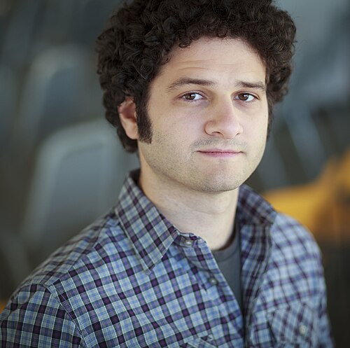
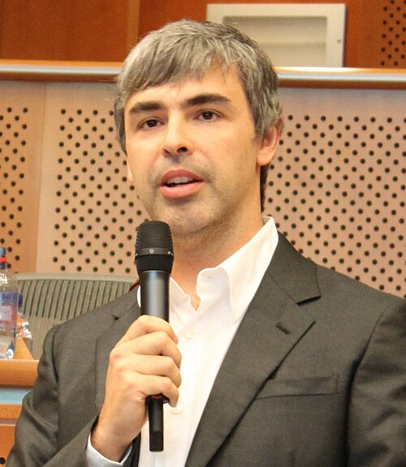

Founders Fund
Peter Thiel
b. 1967Early funder of the Singularity Institute and Summit; reported seed backer of DeepMind. The original patron of Bay Area AI futurism.
Wikipedia →The belief that we are building a digital god did not spread on the strength of argument alone. It was capitalized. A small number of tech fortunes — Peter Thiel's, Dustin Moskovitz's, briefly Sam Bankman-Fried's — seeded the institutes, the conferences, the labs, and the philosophy that now shapes how the world's most powerful AI companies are governed. This is a map of where the money came from, where it went, and what it bought.
Ideologies are cheap; institutions are not. The transhumanist, rationalist, and longtermist ideas bundled together as TESCREAL would have remained internet subcultures without patrons willing to fund them at scale. From the mid-2000s, a handful of Silicon Valley donors did exactly that — bankrolling Eliezer Yudkowsky's Singularity Institute, the Singularity Summit, the seed round that launched DeepMind, and later the grant-making machinery of effective altruism. The same names recur because the capital base was, by design, narrow.
That concentration matters because, as critics including Émile P. Torres and Timnit Gebru argue, money did not just amplify these ideas — it selected which questions could be asked. When a single foundation funds much of a field, its founders' sensitivities quietly define the boundaries of permissible criticism. None of this requires a conspiracy. It only requires that the people who pay for the AI-safety conversation also believe, sincerely, that they are funding the most important cause in history.
How a few fortunes connect to the institutes, labs, and ideologies of the movement. Drag a node; hover to isolate its ties.
The order in which the money moved — and what each cheque set in motion.
The donors, investors, and recruiters who moved the money.
Early funder of the Singularity Institute and Summit; reported seed backer of DeepMind. The original patron of Bay Area AI futurism.
Wikipedia →
DMFacebook co-founder. With wife Cari Tuna, the chief funder of Open Philanthropy — the largest private backer of AI-safety and EA work.
Wikipedia →
Once EA's largest donor via the FTX Future Fund. Convicted of fraud in 2023; his collapse took the movement's signature fortune with it.
Wikipedia →
Co-founded effective altruism and formalized longtermism. Recruited SBF to "earn to give"; advised the Future Fund; later distanced himself.
Wikipedia →
Co-founded GiveWell and Open Philanthropy. Architect of its AI-safety grant-making; held an OpenAI board seat after the 2017 grant.
Wikipedia →
OpenAI CEO. Credits Yudkowsky as an influence on the lab's founding; turned a $1B nonprofit pledge into a capped-profit power center.
Wikipedia →
Co-founded and funded OpenAI; donated to the Future of Life Institute. Called MacAskill's longtermism a "close match" for his philosophy.
Wikipedia →
LPGoogle co-founder; co-founded Singularity University and acquired DeepMind in 2014. Reportedly a believer in building a "digital god."
Wikipedia →"For most people, the highest-impact path isn't to work directly for a good cause — it's to earn as much as you can and give it away."— William MacAskill, on "earn to give" (paraphrased)
Four things the capital purchased — intended and not.
Grants from Open Philanthropy, the Survival and Flourishing Fund, and others effectively built an academic and nonprofit field around existential AI risk — staffing institutes, fellowships, and labs that might not otherwise exist.
Critics argue that when one funder dominates a field, its founders' priorities quietly define which harms count. Present-day issues — bias, labor, surveillance — get less attention than speculative extinction.
"Earn to give" and longtermist math redirect talent and billions toward far-future scenarios. Critics like Torres argue this devalues the present poor, the climate, and the natural world as rounding errors.
The movement's biggest bet became its biggest liability. Fraudulent wealth funded longtermist projects until it vanished overnight — exposing how much of the cause rested on a single, unaccountable fortune.
Documents and reporting used on this page. See the full References library →.